Tudo o que aprendemos fazendo vídeos animados com inteligência artificial — e as regras que a IA precisa seguir para o vídeo sair pronto.
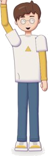
Aqui está o método: processo, regras, lições e prompts. O motor que desenha os vídeos é do autor e não faz parte deste material. Os personagens da série aparecem como exemplo — crie os seus seguindo o mesmo caminho.
Prompts: as caixas roxas ✦ em cada capítulo. Copie, troque o que está entre [colchetes] e cole na IA.
A IA desenha cada quadro com código, junta tudo, coloca voz e legenda e entrega um MP4 pronto.
O vídeo é vertical (9:16, 1080×1920), a 30 quadros por segundo. Cada quadro segue regras fixas — personagem, cenário, câmera e efeitos — e por isso o resultado sai sempre igual quando você renderiza de novo. Dá para corrigir um detalhe sem estragar o resto.
Nada é produzido antes do roteiro ser aprovado. E nada de voz paga antes de uma prévia com voz grátis ser aprovada.
Peça para a IA falar em português simples e mostrar o resultado (imagem e vídeo) em vez de explicar código. Você aprova olhando a tela.
Eu não sou programador. Fale comigo em português simples, sem explicar código. Sempre me mostre o resultado (imagem ou vídeo) para eu aprovar. Trabalhe nesta ordem: roteiro → espera minha aprovação → folha de teste → prévia com voz grátis → ajustes → voz final → vídeo pronto, capa e descrição. No fim, anote o que funcionou e o que deu errado.
Vídeo curto que prende é uma pergunta que a pessoa quer ver respondida — na próxima parte.
A série nasce de uma frase: "E se você acordasse controlando a terra?". Ela coloca quem assiste dentro da história (narração em "você") e promete algo visual logo de cara.
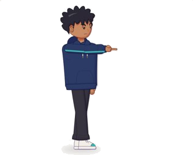
LucasProtagonista. Acorda controlando a terra. Curioso → assustado → corajoso.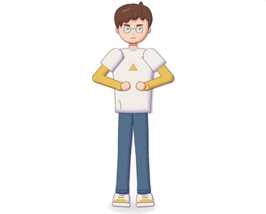
RafaelMelhor amigo. Nerd, leal e fala demais. Fica com medo do amigo.Repare: cada um tem uma cor que marca e uma silhueta diferente (moletom largo, cardigã aberto, camiseta com manga longa e óculos). Dá para reconhecer só pela sombra.
| Item | Regra |
|---|---|
| Formato | Vertical 9:16, 1080×1920 |
| Duração | No máximo 1 min 15 s |
| Cada fala | 2 a 3 segundos |
| Abertura | 2 s de capa com a premissa escrita grande |
| Final | "PARTE X" + "SEGUE PRA VER A PARTE X+1" (3 s) |
Testamos uma versão engraçada e uma dramática do mesmo episódio. A dramática ganhou: medo e mistério, luz fria, uma única luz quente (o poder), coração batendo e narração com pausas.
Me dê 10 ideias de série para vídeos verticais no formato "E se você acordasse [podendo…]?". Para cada uma: o poder (tem que ser bem visual), o perigo que ele causa, quem é o protagonista, 2 personagens de apoio e o gancho do fim da parte 1. Tom: drama e mistério, para jovens.
Crie a ficha da minha série "[nome]": personagens (quem são e personalidade), cenários, objetos importantes, efeitos do poder e uma tabela com o status de cada episódio. Atualize essa ficha a cada episódio novo.
Uma tabela: tempo, fala e o que aparece na tela. É isso que você aprova antes de qualquer desenho.
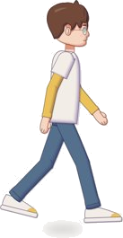
| # | Tempo | Fala | O que aparece |
|---|---|---|---|
| 1 | 0–2 s | E se você acordasse controlando a terra? | Capa: quarto escuro, pedras flutuando, título grande |
| 2 | 2–4,5 s | Ontem à noite, a cidade inteira tremeu. | Rua à noite, postes piscando; câmera sobe até a janela |
| 3 | 4,5–7 s | Você acorda… e o chão ainda treme. | Close abrindo os olhos; poeira caindo; coração batendo |
A IA escreve o roteiro, mostra e espera aprovação. Só depois transforma em cenas.
Escreva o roteiro da PARTE [X] da série "[E se você…?]". Use a fórmula: gancho → cenário → ação que cresce (3–4 batidas) → estalo → consequência → virada final. Formato: tabela com nº, tempo, fala (com quem fala) e o que aparece na tela. Regras: no máximo 1 min 15 s; cada fala de 2 a 3 s; os 2 primeiros segundos são a capa com a premissa; a narração nunca descreve o que já se vê; marque onde entra coração, silêncio e impacto. Termine com a cartela "PARTE X / SEGUE PRA VER A PARTE X+1". Não produza nada antes de eu aprovar.
Reescreva este roteiro com mais medo e mistério: o poder foge do controle e põe alguém em perigo, a luz é fria e o poder é a única luz quente, a narração tem pausas ("Um tapa… e a casa inteira treme"). Mantenha o máximo de 1 min 15 s.O público reconhece o personagem pela silhueta e pelas cores. Se ele muda de um vídeo para o outro, a série morre.
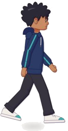
Todo personagem principal tem uma ficha: as 4 vistas (frente, três quartos, perfil e costas), as expressões, as poses e uma tabela com proporções, cores, roupa, cabelo, olhos e poder.
Em todo vídeo, o protagonista aparece exatamente como na ficha. A IA não muda nada nele. Mudança só com pedido e aprovação do autor — e aí a ficha é refeita.
H é a altura da cabeça (do topo ao queixo). Todo o corpo é medido nessa unidade, e as linhas valem para todas as vistas.
| Ponto | Altura |
|---|---|
| Queixo | 1 H |
| Ombros | 1,2 H |
| Cintura | 2,3 H |
| Quadril | 2,75 H |
| Joelho | 4 H |
| Sola | 5,5 H |
Jovem: 5 a 6 H · Criança: ~4,5 H · Chibi (piada rápida): ~3,2 H.
Com as alturas definidas, o personagem fica do mesmo tamanho em todas as vistas e cenas. Na série, a Mãe é mais alta e o Rafael é mais alto e magro que o Lucas — a diferença de altura também conta quem é quem.
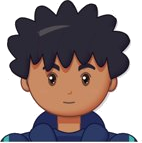
Neutro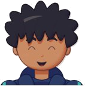
Feliz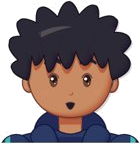
Espanto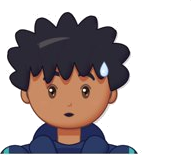
Medo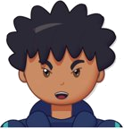
Raiva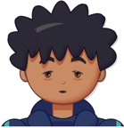
Cansado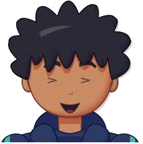
RindoRepare no medo: sobrancelha sobe, boca pequena e gota de suor. No feliz, os olhos viram arcos. Mexer em uma coisa só deixa todas as caras parecidas.
Use referências só para estudar o que se repete. Nunca reproduza rosto, cabelo, roupa ou combinação de cores de um personagem que já existe.
Crie 6 variações do personagem [nome], [idade], [personalidade], numa folha só, cada uma com uma letra (A–F). Regras: corpo de 5,5 cabeças; silhueta simples; roupa larga e marcante; no máximo 5 cores, com uma cor de destaque de 10–20%; sem preto e branco puros; nada copiado de personagens que já existem. Me mostre a folha e espere eu escolher.
Gere a ficha oficial do personagem escolhido: 4 vistas (frente, 3/4, perfil, costas) com as linhas de altura (cabeça, queixo, ombro, quadril, joelho, sola), 8 expressões (neutro, feliz, espanto, medo, raiva, determinado, cansado, rindo), 6 poses e uma tabela com proporções, cores, roupa, cabelo, olhos e poder. A partir de agora, ele aparece exatamente assim em todo vídeo.
O que tira a cara de "desenho de criança" é o cenário com profundidade e luz de cinema.
O que deixava o vídeo com cara de desenho era o contorno preto grosso e a sombra dura de um tom só. Trocamos por borda fina da cor da peça, sombra em degradê e uma sombra leve de contato entre as peças.
Cada cena tem pelo menos 3 objetos além das paredes (carro, lixeira, arbusto, cartaz, vaso, livros). Os objetos aparecem perto de quem usa.
Desenhe a cena normal, escureça tudo com azul e cantos escuros e só depois desenhe o que brilha. O laranja do poder vira a única luz quente.
Objetos redondos (vaso, copo, poste) precisam de volume com degradê. Feitos como caixa, ficam falsos.
Crie o cenário [quarto / rua / escola] em perspectiva real: câmera na altura de uma pessoa, névoa que clareia o que está longe, sol baixo vindo da esquerda com feixes de luz, pelo menos 3 objetos de cena além das paredes e acabamento de cinema (cor quente, brilho leve, vinheta, grão). Os personagens continuam no estilo deles; só o cenário ganha profundidade. Me mostre uma imagem de teste.
Deixe esta cena com clima de madrugada: escureça tudo com um azul frio e cantos escuros, e só depois desenhe o poder. O brilho laranja do poder tem que ser a única luz quente da cena.
A regra mais importante do estilo: nada fica parado mais de 1 segundo.
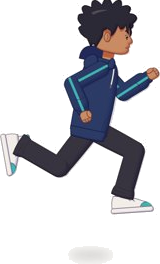
Em vez de cortar a cada fala, a cena é uma tomada longa que atravessa várias falas. A câmera gira em volta dos personagens e, ao girar, revela outro personagem que estava ali. Os personagens viram o corpo conforme o ângulo e nunca ficam estátuas.
Por cima de tudo, uma deriva leve: anda devagar, gira poucos décimos de grau, aproxima suave. Depois de cada corte, ela "chega" um pouco deslocada e se acomoda.
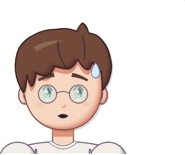
2 · cabeça e caraFaça as cenas [X a Y] como uma tomada contínua: a câmera gira em volta de [personagem], sobe um pouco e revela [outro personagem] que estava ali. Os personagens viram o corpo conforme o ângulo e nunca ficam parados (respiram, trocam o peso, olham em volta). Câmera perto, da cintura para cima. Nada parado por mais de 1 s. Nada a menos de 1 m da câmera.
Na cena [X], faça a reação de [personagem] em três tempos: primeiro só os olhos (0–0,4 s), depois a cabeça vira e a expressão muda para [medo / raiva / espanto] (0,4–0,9 s), e por fim a câmera chega um pouco mais perto.
Poder bonito é poder em camadas. Um círculo brilhando sozinho parece barato.
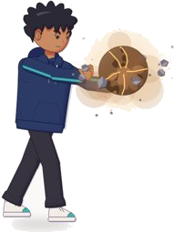
| Camada | O que é |
|---|---|
| 1 · Aura | Brilho grande e desfocado, meio transparente |
| 2 · Corpo | As formas do poder (lascas, pedras, labaredas), cor forte |
| 3 · Miolo | A versão clara da cor |
| 4 · Núcleo | Quase branco, bem pequeno (no máximo 6% do efeito) |
| 5 · Partículas | Faíscas em estrela, pontos, poeira |
Brilho só aparece bem sobre fundo escuro. Em cena de dia, use efeitos chapados (pedra, terra, poeira) com o brilho só nas rachaduras.
Quem está perto do poder recebe a luz dele: uma borda colorida do lado virado para o efeito. Isso "cola" o efeito na cena.
Brilho somado demais estoura e vira mancha branca. Rachadura muito perto da câmera fica enorme: comece a pelo menos 1,5 m dela.
Crie o efeito do poder de [elemento] em 5 camadas: aura desfocada, corpo com formas recortadas na cor forte, miolo claro, núcleo quase branco (no máximo 6% do efeito) e partículas em estrela. Ritmo: carregar 0,3–0,6 s → disparar → viajar → impacto com flash de 2 quadros e tremida de câmera → dissipar em 0,4–0,8 s. O personagem perto recebe uma borda de luz na cor do poder. Me mostre numa folha de teste sobre fundo escuro e sobre cena de dia.
O som decide se a cena dá medo. E a voz decide o tempo de cada cena.
A prévia usa uma voz robótica grátis para medir tempo e ritmo. Falas que passam de 2,5 s são aceleradas ou cortadas.
Trave os tempos da imagem antes de finalizar o som. Mudou o tempo, refaça o som.
Escolha uma voz em português do Brasil para cada personagem: narrador [grave e misterioso], [personagem 1: …], [personagem 2: …]. Gere uma fala por vez, com a emoção marcada. Corte o silêncio das pontas, use a versão mais curta e acelere no máximo 1,25×. Se não couber, redistribua o tempo entre as cenas sem passar de 1 min 15 s.
Coloque batida de coração nas cenas [X e Y], acelerando de 80 para 140 batidas por minuto, com a imagem pulsando no mesmo instante de cada batida. Meio segundo de silêncio antes de cada impacto e um ronco grave nos tremores.
Metade das pessoas assiste sem som. A legenda precisa ser lida num piscar de olhos.
| Regra | Como |
|---|---|
| Tamanho | No máximo 3 palavras por vez, quebrando na pontuação |
| Fonte | Bem grossa, caixa alta, branca com contorno escuro |
| Destaque | A palavra-chave em amarelo (TERRA?, TREME.) |
| Posição | Nunca em cima de rosto — vai para a faixa mais longe dos rostos |
| Estabilidade | Não muda de lugar no meio de um bloco |
| Capa e cartela | Sem legenda (já têm texto grande) |
Coloque legenda acompanhando a fala: no máximo 3 palavras por vez, caixa alta, fonte bem grossa, branca com contorno escuro, a palavra-chave em amarelo. Ela nunca pode cobrir rosto e não muda de lugar no meio de um bloco. Sem legenda na capa e na cartela final.
Os 2 primeiros segundos seguram a pessoa. Os 3 últimos trazem ela de volta.
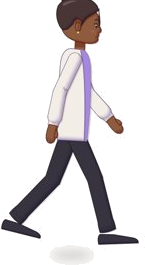
A premissa escrita grande ("E SE VOCÊ ACORDASSE CONTROLANDO A TERRA?") sobre a imagem mais forte do episódio, com o narrador lendo.
Crie a capa do Reels/TikTok da PARTE [X]: [personagem] parado numa vista fixa, a imagem mais forte do episódio, título "[premissa]" no terço de cima com faixa escura atrás e selo "PARTE [X]". Mantenha título e rosto entre 15% e 85% da altura.
Escreva a descrição do post da PARTE [X]: uma linha de gancho, um resumo que não entrega o final, "PARTE [X]", uma pergunta para as pessoas comentarem e 8 hashtags em português.
A IA confere o vídeo como um editor chato antes de mostrar para você.
Antes de me mostrar o vídeo, confira e me diga o resultado de cada item: nada parado por mais de 1 s; duração até 1 min 15 s; nenhum quadro piscando preto/branco; câmera nunca dentro de parede ou personagem; legenda nunca em rosto e com no máximo 3 palavras; protagonista igual à ficha; volume certo; capa no início e "PARTE X" no fim. Corrija o que falhar.
Cada erro abaixo virou uma regra. Use como lista de consertos.
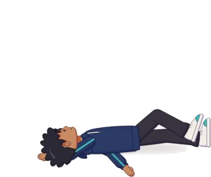
| Problema | Conserto |
|---|---|
| Quadrado preto/branco piscando | Algo rente ou atrás da câmera. Não desenhar o que a câmera já passou. |
| Personagem "fantasma" | Câmera parada na troca de vista. Parar longe desse ângulo; na capa, vista fixa. |
| Personagem some e reaparece | Câmera passou perto demais. Planejar o caminho por fora. |
| "Assustado" com cara de bravo | Sobrancelha invertida. Testar cada expressão numa folha. |
| Todas as caras com sono | Pálpebra reta. A borda da pálpebra tem que ser curva. |
| Boca de raiva parecendo sorriso | Curvar os cantos para baixo. |
| Bolinhas nas juntas | Contorno do membro inteiro primeiro, preenchimento depois. |
| Pernas cruzando ao andar de costas | O lado das pernas inverte de frente para costas. |
| Cores erradas "no olho" | Sombra e luz sempre por fórmula, nunca à mão. |
| Voz final não cabe | Cortar silêncio, acelerar até 1,25×, redistribuir o tempo. |
| Esfera de poder some | Aumentar: cerca de meia cabeça de raio. |
| Dedos cruzando no close | Ângulos pequenos e mãos bem separadas. |
| Árvore tampando o quadro | Primeiro plano sempre na borda. |
| Render muito lento | Desfocar em camada pequena; várias abas em paralelo. |
| Espera parece travada | Toda espera tem zoom lento. |
No vídeo, a cena [X] tem este problema: [descreva o que viu, ex.: "um quadrado preto pisca", "o personagem fica transparente"]. Descubra a causa, corrija só essa cena e me mostre um quadro antes e depois.
A lista completa. Vale para todo episódio, a não ser que o autor peça diferente.
O prompt mestre para abrir a conversa, e atalhos para o dia a dia.
Você vai criar um vídeo animado vertical para [Reels/TikTok/Shorts]. SÉRIE: "[E se você…?]" — PARTE [X] PERSONAGENS: [protagonista + ficha], [apoio] PODER/SITUAÇÃO: [o que acontece de visual] TOM: dramático, medo e mistério. REGRAS: - Fale comigo em português simples e me mostre imagens/vídeos, não código. - Primeiro o roteiro em tabela (tempo, fala, o que aparece). Só produza depois que eu aprovar. - 9:16, 1080×1920, 30 fps, no máximo 1 min 15 s; cada fala 2–3 s. - 2 primeiros segundos: capa com a premissa escrita grande. - Final: "PARTE X" + "SEGUE PRA VER A PARTE X+1", botão pulsando sem mão, narrador falando. - O protagonista aparece exatamente como na ficha. - Nada parado por mais de 1 s. Tomadas contínuas com a câmera girando em volta dos personagens. Câmera perto. Reação em 3 tempos. - Personagens nunca estáticos. Objetos perto de quem usa. 3+ objetos por cena. - Poderes em camadas (aura, corpo, miolo, núcleo, partículas). - Legenda: até 3 palavras, palavra-chave em amarelo, nunca em rosto. - Narração não descreve o que já se vê. Coração sincronizado; silêncio antes do impacto. - Folha de teste e prévia com voz grátis antes da voz final. - Entregue: vídeo, capa e descrição.
Continue a série a partir do fim da PARTE [X]. Releia a ficha da série, mantenha os personagens iguais e escreva o roteiro da PARTE [X+1] seguindo as mesmas regras. Espere minha aprovação.
O vídeo passou de 1 min 15 s. Corte ou junte cenas sem perder o gancho, o estalo e a virada final. Me mostre a tabela nova antes de refazer.
Está parecendo parado. Em todas as cenas: câmera sempre se mexendo, personagens trocando o peso e olhando em volta, e nenhum trecho parado por mais de 1 s.
Antes de renderizar o vídeo inteiro, me mostre uma folha com um quadro do meio de cada cena, numerado.
Preciso de um personagem novo: [nome], [papel na história], [personalidade]. Ele tem que combinar com o elenco mas ter silhueta e cor de destaque diferentes. Faça 6 variações numa folha.
Liste o que funcionou e o que deu errado neste episódio, e transforme cada erro numa regra para os próximos.
Agora é com você.
Faça a parte 1.